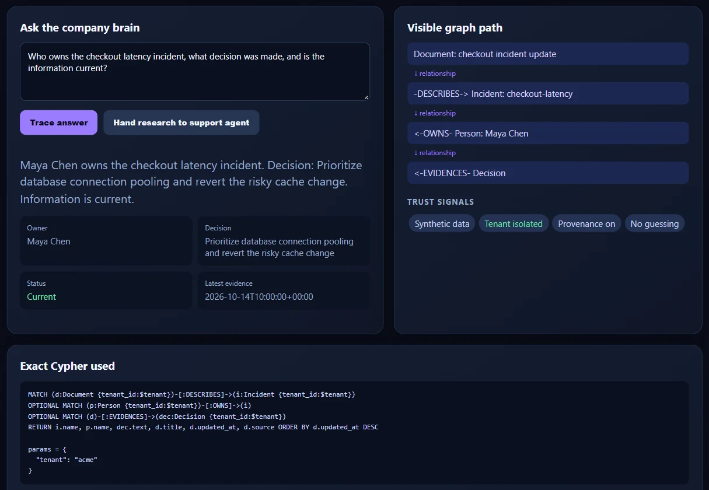

Company memory you can verify
Ask about incidents, people and decisions. Every answer shows its evidence.
$ curl -X POST localhost:8000/ask -d '{
"tenant_id": "acme",
"agent_id": "support-agent",
"question": "Who owns the checkout latency incident?"
}'
owner Maya Chen
decision Prioritize database connection pooling
and revert the risky cache change
status current
evidence 2026-10-14T10:00:00+00:00
path Document -DESCRIBES-> Incident
Incident <-OWNS- Person
Document -EVIDENCES-> DecisionOne answer, inspected
The live demo, tracing the same question.

What every answer returns
- answer
- A plain-language reply to the question.
- owner, decision
- Who is responsible, and what was decided.
- freshness
- Whether the information is still current.
- conflicts
- A warning when sources disagree.
- sources
- The documents the answer came from.
- cypher, path
- The exact query, and the graph path it walked.
Memory is a graph
Every memory is a node. Every connection is an edge, scoped to one tenant.
+------------+ DESCRIBES +------------+
| Document | -----------> | Incident |
+------------+ +------------+
| ^
| EVIDENCES | OWNS
v |
+------------+ +------------+
| Decision | | Person |
+------------+ +------------+Run it on one machine
FalkorDB and the API start together. The API seeds synthetic incidents.
Read the setup notes$ git clone https://github.com/boss477/graphhacks.git
$ cd graphhacks
$ docker compose up --build